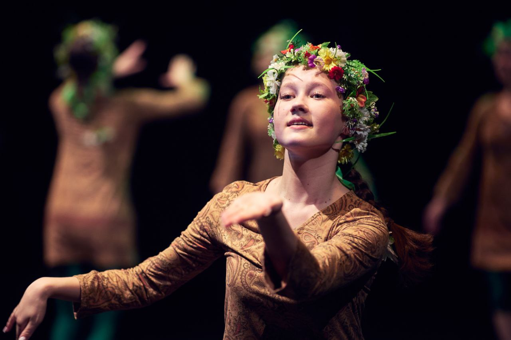
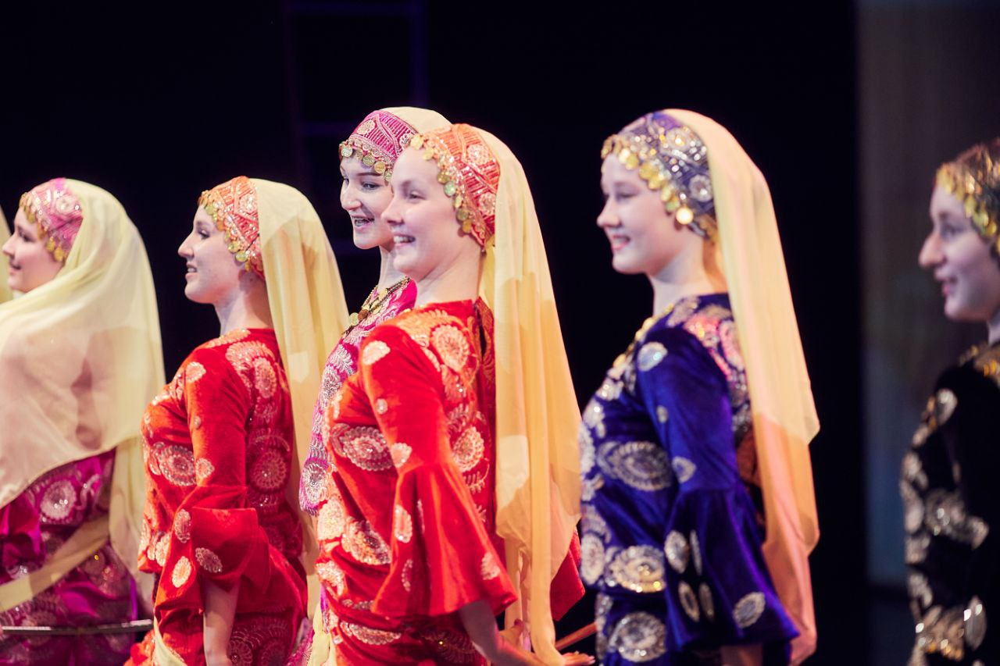
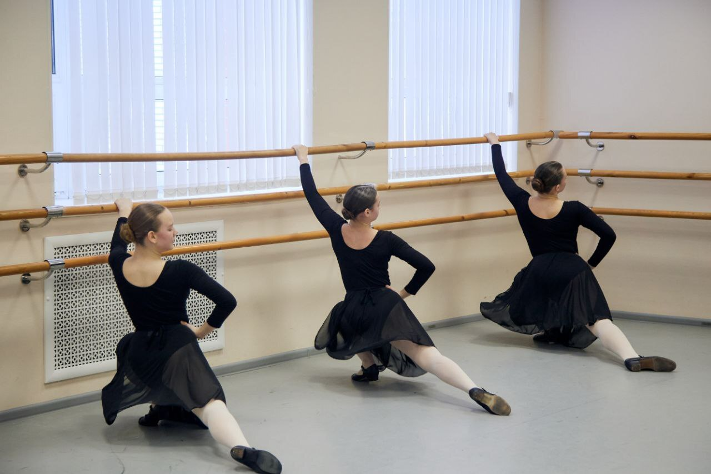

Гран-при и конкурсные победы
На сайте школы указаны победы во всероссийских и международных конкурсах.
Санкт-Петербург, проспект Энергетиков, 26
Танцы для детей от 2,5 лет и взрослых.
Расти, чувствовать, быть частью ансамбля.
Первое пробное занятие — бесплатно

Репетиции, выступления, поездки.
За каждым результатом — общий труд.

На сайте школы указаны победы во всероссийских и международных конкурсах.
Сайт рассказывает о фестивалях в шести европейских странах и выступлении в Париже по приглашению ЮНЕСКО.
Среди заявленных достижений — премии Законодательного собрания Санкт-Петербурга и Кубок СЗФО.
В итоговой версии здесь будут годы, названия конкурсов, дипломы и истории выступлений. Сейчас показаны сведения действующего сайта, без независимой проверки.
Выберите возраст — посмотрите,
с чего можно начать.
Для самых маленьких
Ритмопластика и артикуляционная гимнастика. Знакомство с движением, ритмом и танцем в игровой форме.
Обсудить пробное занятиеСостав группы и возрастной допуск уточняются при записи.

Знакомство с «Ликованием»
В основе ансамбля — народный танец, авторская программа и внимание к каждому ученику. Классическая и современная хореография помогают развивать технику и выразительность.
Основатель, балетмейстер и педагог высшей квалификационной категории. Автор образовательной программы в области хореографического искусства.
В новом сайте — биографии педагогов и знакомство с их занятиями.
Бесплатное пробное занятие.
Дальше — подходящий вашей группе абонемент.
2 часа в неделю
Для группы 3–4 года по текущему сайту
3 часа в неделю
Для детей от 5 лет по текущему сайту
От 4 часов в неделю
Безлимит по текущему сайту
Цены перенесены из архива сайта от 13.10.2026. Актуальность и условия акций нужно подтвердить.
Понятные карточки по возрасту, дням и времени. До публикации школа должна подтвердить расписание 2026–2027 и исправить найденные неоднозначности.
Расскажите о возрасте и опыте занятий.
Школа поможет выбрать группу.
Проспект Энергетиков, 26
Красногвардейский район
Это макет: онлайн-форма и доставка заявок ещё не подключены. Телефон и почта ведут на действующие контакты школы.